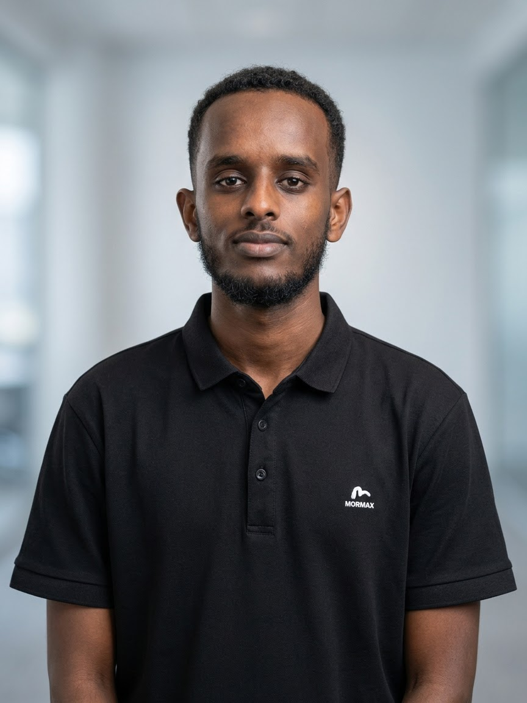
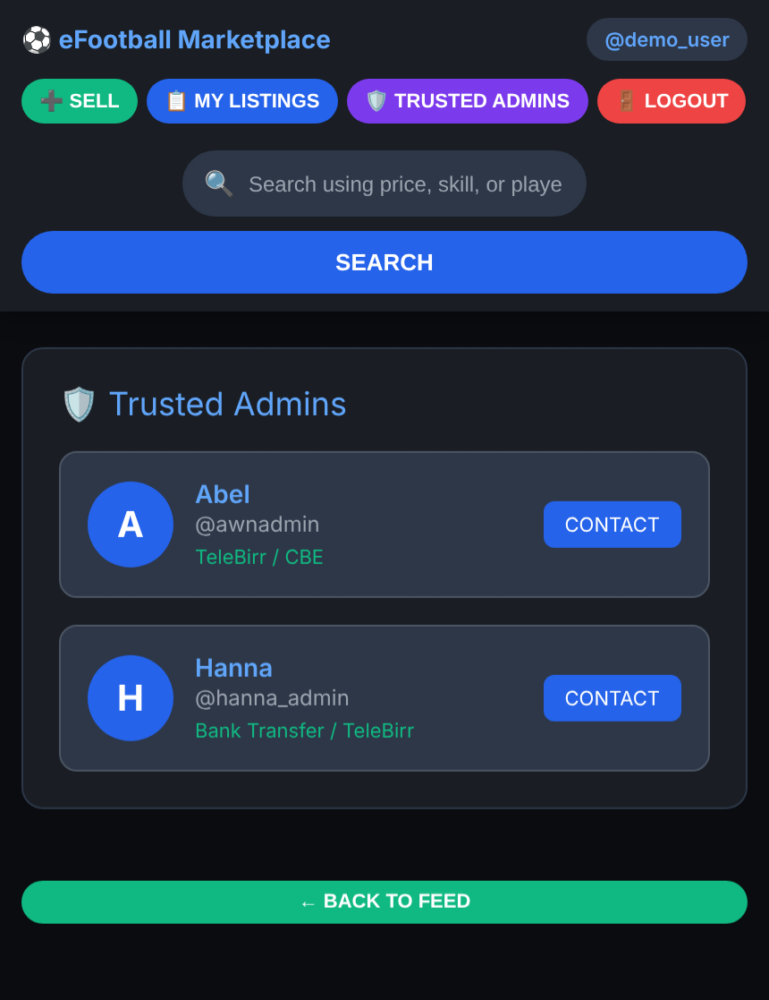
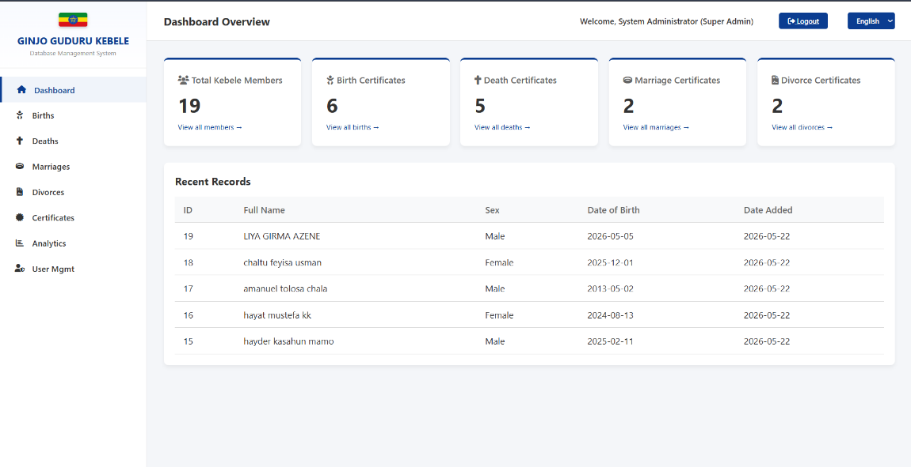

Information Science
Jimma University · Year IV
INFORMATION SCIENCE · JIMMA UNIVERSITY
Hello, I’m
I’m an
Information Science student and aspiring IT professional.Fourth-year Information Science student at Jimma University, passionate about programming, web technologies, databases, and digital innovation. I build practical solutions and keep growing as a developer — one project at a time.

01 A LITTLE ABOUT ME
I'm an Information Science student at Jimma University, currently in my fourth year, exploring the intersection of programming, data, and the web.
My academic journey has given me a strong foundation in programming principles, web technologies, database systems, networking, and the fundamentals of artificial intelligence. I enjoy learning by building — turning ideas into working software.
I'm focused on steady, hands-on growth. Rather than claiming expertise I don't yet have, I prefer to show what I'm building and let the work speak for itself.
Jimma University · Year IV
Web · databases · data fundamentals
Building projects, sharpening skills
02 THE FOUNDATION
B.Sc. in Information Science
Coursework spans programming, web technologies, database systems, networking, data analysis, and artificial intelligence fundamentals.
03 WHAT I’M EXPLORING
Building proficiency across these areas through coursework and personal projects.
Core logic and problem solving with languages like Python, Java, and C++.
Building responsive interfaces with HTML, CSS, and vanilla JavaScript.
Relational database design, queries, and data modeling fundamentals.
Fundamentals of networking protocols and operating systems.
Exploring, cleaning, and interpreting data for useful insights.
Foundational concepts of AI and machine learning.
04 SELECTED WORK
A selection of personal projects. Technologies are listed only where verified.
 01 / PROJECT
01 / PROJECT
A project focused on organizing and managing eFootball tournaments. Built as a personal initiative to explore web-based competition management.
View on GitHub
02 / PROJECTA marketplace-style project related to eFootball, exploring buying, selling, or trading concepts within a digital environment.
View on GitHub
03 / PROJECTA web-based platform designed to manage and organize vital community records.
View on GitHub05 THE DIRECTION
Deepen my programming, web development, and database knowledge through consistent practice and real projects.
Seek internships, collaborative projects, and hands-on opportunities to apply what I learn in real settings.
Create applications that solve meaningful problems and improve everyday experiences for users.
Work toward a professional role in the IT industry where I can contribute, learn, and grow long-term.
06 THE NEXT CONVERSATION
OPEN TO OPPORTUNITIESI'm open to internships, collaborative projects, and learning opportunities. Feel free to reach out — I'd love to connect.
Message on TelegramBased in Ethiopia · Open to remote and local opportunities.
GOOD CONVERSATIONS START HERE
GMAILabdulwehabnesru6@gmail.com TELEGRAM@awn178 GITHUBgithub.com/awn178 LINKEDINAbdulwehab NesruThe fastest way to reach me is through Telegram or email.